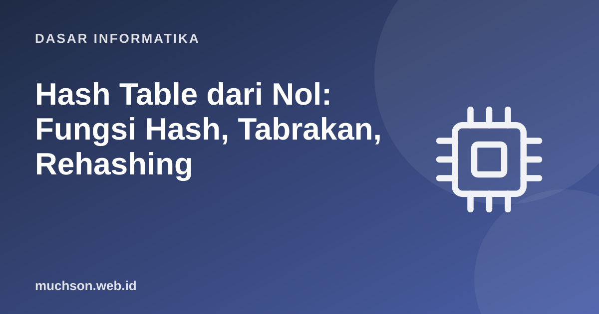

Beranda › Artikel › Dasar Informatika
Dasar InformatikaHash Table dari Nol: Fungsi Hash, Tabrakan, Rehashing
Dictionary Python, HashMap Java, objek JavaScript, dan indeks hash basis data semuanya adalah hash table: struktur data yang menjanjikan pencarian, penyisipan, dan penghapusan dalam waktu rata-rata konstan. Mari bangun satu dari nol untuk melihat mengapa ia cepat, kapan melambat, dan apa yang terjadi saat dua kunci "bertabrakan".
Sebaiknya sudah paham: list, dictionary Python, kompleksitas algoritma

Setelah membaca dan mencoba materi ini, Anda mampu:
- menjelaskan ide pemetaan kunci ke indeks dengan fungsi hash
- mengimplementasikan hash table dengan chaining
- menjelaskan open addressing (linear probing) dan clustering
- menjelaskan faktor muat dan rehashing
- menganalisis kompleksitas rata-rata vs terburuk dan menghubungkannya dengan dict Python
Ide dasar
Array memberi akses O(1) lewat indeks. Hash table meminjam trik itu untuk kunci apa saja: sebuah fungsi hash mengubah kunci menjadi bilangan bulat, lalu bilangan mod ukuran_tabel memberi indeks di array internal (ember/bucket).
Fungsi hash dan tabrakan
Karena kunci yang mungkin jauh lebih banyak dari ember, tabrakan tidak terhindarkan (prinsip lubang merpati). Fungsi hash yang baik menyebar kunci merata dan murah dihitung.
def hash_buruk(kunci, ukuran):
return len(kunci) % ukuran # hanya panjang kunci: banyak tabrakan
def hash_polinomial(kunci, ukuran):
h = 0
for ch in kunci:
h = (h * 31 + ord(ch)) % (2 ** 32) # setiap karakter dan posisinya berpengaruh
return h % ukuran
kunci = ["apel", "jeruk", "mangga", "pisang", "durian", "melon", "kiwi", "nanas", "pepaya", "salak"]
for fungsi in (hash_buruk, hash_polinomial):
ember = [0] * 7
for k in kunci: ember[fungsi(k, 7)] += 1
print(f"{fungsi.__name__:<16} sebaran per ember: {ember} ember terpadat: {max(ember)}")hash_buruk sebaran per ember: [0, 0, 0, 0, 2, 4, 4] ember terpadat: 4
hash_polinomial sebaran per ember: [2, 3, 1, 1, 1, 1, 1] ember terpadat: 3
Chaining: setiap ember berisi daftar
class HashChaining:
def __init__(self, kapasitas=8):
self.kapasitas = kapasitas
self.ember = [[] for _ in range(kapasitas)]
self.n = 0
def _indeks(self, kunci): return hash(kunci) % self.kapasitas
def set(self, kunci, nilai):
daftar = self.ember[self._indeks(kunci)]
for i, (k, _) in enumerate(daftar):
if k == kunci:
daftar[i] = (kunci, nilai); return # perbarui kunci yang sudah ada
daftar.append((kunci, nilai)); self.n += 1
if self.n / self.kapasitas > 0.75: self._rehash() # faktor muat terlalu tinggi
def get(self, kunci, bawaan=None):
for k, v in self.ember[self._indeks(kunci)]:
if k == kunci: return v
return bawaan
def hapus(self, kunci):
daftar = self.ember[self._indeks(kunci)]
for i, (k, _) in enumerate(daftar):
if k == kunci: del daftar[i]; self.n -= 1; return True
return False
def _rehash(self):
lama = [item for daftar in self.ember for item in daftar]
self.kapasitas *= 2 # gandakan ukuran
self.ember = [[] for _ in range(self.kapasitas)]
self.n = 0
for k, v in lama: self.set(k, v) # setiap kunci dihitung ulang posisinya
print(f" (rehash: kapasitas menjadi {self.kapasitas})")
tabel = HashChaining()
for i, kata in enumerate(["apel", "jeruk", "mangga", "pisang", "durian", "melon", "kiwi", "nanas"]):
tabel.set(kata, i)
print("get('mangga') =", tabel.get("mangga"), "| get('rambutan') =", tabel.get("rambutan", "tidak ada"))
tabel.set("mangga", 99); tabel.hapus("apel")
print("n =", tabel.n, "| faktor muat =", round(tabel.n / tabel.kapasitas, 2)) (rehash: kapasitas menjadi 16)
get('mangga') = 2 | get('rambutan') = tidak ada
n = 7 | faktor muat = 0.44
Open addressing: satu elemen per sel
Alih-alih daftar, jika sel sudah terisi, cari sel kosong berikutnya (linear probing: coba indeks+1, +2, ...). Penghapusan memerlukan penanda khusus ("batu nisan") agar rantai pencarian tidak terputus.
KOSONG, HAPUS = object(), object()
class HashProbing:
def __init__(self, kapasitas=8):
self.kap, self.sel, self.n = kapasitas, [KOSONG] * kapasitas, 0
def _cari(self, kunci):
i = hash(kunci) % self.kap
pertama_hapus = None
for langkah in range(self.kap):
j = (i + langkah) % self.kap # linear probing
if self.sel[j] is KOSONG:
return (pertama_hapus if pertama_hapus is not None else j), langkah, False
if self.sel[j] is HAPUS:
if pertama_hapus is None: pertama_hapus = j
elif self.sel[j][0] == kunci:
return j, langkah, True
return pertama_hapus, self.kap, False
def set(self, kunci, nilai):
j, _, ada = self._cari(kunci)
if not ada:
if (self.n + 1) / self.kap > 0.7: self._rehash(); j, _, _ = self._cari(kunci)
self.n += 1
self.sel[j] = (kunci, nilai)
def get(self, kunci):
j, langkah, ada = self._cari(kunci)
return (self.sel[j][1], langkah) if ada else (None, langkah)
def hapus(self, kunci):
j, _, ada = self._cari(kunci)
if ada: self.sel[j] = HAPUS; self.n -= 1
def _rehash(self):
lama = [s for s in self.sel if s is not KOSONG and s is not HAPUS]
self.kap *= 2; self.sel = [KOSONG] * self.kap; self.n = 0
for k, v in lama: self.set(k, v)
t = HashProbing()
for i, kata in enumerate(["apel", "jeruk", "mangga", "pisang", "durian"]): t.set(kata, i)
print("get('durian') ->", t.get("durian"), "(nilai, jumlah langkah probing)")
t.hapus("jeruk")
print("setelah hapus 'jeruk': get('jeruk') ->", t.get("jeruk"), "| get('durian') masih ->", t.get("durian"))
print("kapasitas:", t.kap, "| n:", t.n)get('durian') -> (4, 0) (nilai, jumlah langkah probing)
setelah hapus 'jeruk': get('jeruk') -> (None, 1) | get('durian') masih -> (4, 0)
kapasitas: 8 | n: 4
Perbandingan dan kompleksitas
| Aspek | Chaining | Open addressing |
|---|---|---|
| Memori | Ekstra penunjuk untuk daftar | Hanya array; lokalitas cache baik |
| Faktor muat | Boleh > 1 | Harus < 1; performa turun cepat mendekati 1 |
| Hapus | Sederhana | Perlu penanda hapus |
| Kelemahan | Penunjuk tersebar | Clustering primer: kelompok sel terisi memanjang |
| Operasi | Rata-rata | Terburuk |
|---|---|---|
| Cari / sisip / hapus | O(1) | O(n) bila semua kunci bertabrakan |
| Rehash | O(n), teramortisasi O(1) per sisip |
# bukti terburuk: kunci dengan hash sama membuat dict melambat menjadi O(n)
import time
class Buruk:
def __init__(self, v): self.v = v
def __hash__(self): return 1 # semua kunci bertabrakan
def __eq__(self, o): return self.v == o.v
class Baik:
def __init__(self, v): self.v = v
def __hash__(self): return hash(self.v)
def __eq__(self, o): return self.v == o.v
for kelas in (Baik, Buruk):
n = 2000
mulai = time.perf_counter()
d = {kelas(i): i for i in range(n)}
durasi = time.perf_counter() - mulai
print(f"{kelas.__name__:<6} {n} sisipan: {durasi * 1000:8.1f} ms")Baik 2000 sisipan: 0.5 ms
Buruk 2000 sisipan: 99.5 ms
Karena kunci dicari lewat hash dan kesamaan, kunci harus immutable (atau setidaknya tidak berubah hash-nya): itulah sebabnya list tidak boleh menjadi kunci dict di Python, tetapi tuple boleh. Dua objek yang sama menurut == harus memiliki hash yang sama.
Dict Python dan HashMap Java
- dict CPython: open addressing dengan probing yang diacak, ukuran tabel pangkat dua, rehash saat sekitar dua pertiga terisi; sejak Python 3.7 menjaga urutan penyisipan lewat larik indeks kompak terpisah.
- HashMap Java: chaining; ember dengan daftar panjang diubah menjadi pohon seimbang (sejak Java 8) agar kasus terburuk menjadi O(log n); kapasitas pangkat dua, faktor muat bawaan 0,75.
- Set hampir sama dengan dict tanpa nilai.
1. Mengapa pencarian di hash table "rata-rata O(1)", bukan "selalu O(1)"?
2. Tabel berkapasitas 16 dan 12 elemen: faktor muatnya? Apa yang terjadi pada implementasi dengan ambang 0,75?
3. Mengapa penghapusan pada linear probing tidak boleh langsung mengosongkan sel?
4. Implementasikan sistem hitung kemunculan kata memakai dict dan jelaskan kompleksitasnya.
- Hash table memetakan kunci ke indeks dengan fungsi hash mod ukuran tabel.
- Tabrakan ditangani dengan chaining atau open addressing.
- Faktor muat dijaga lewat rehashing; sisip teramortisasi O(1).
- Rata-rata O(1), terburuk O(n); hash buruk atau serangan membuatnya lambat.
- Kunci harus tak berubah dan konsisten antara == dan hash.
Tanya jawab
Apa bedanya hash table dan pohon seimbang?
Apa itu consistent hashing?
Apakah hash sama dengan enkripsi?
Referensi
- Cormen, Leiserson, Rivest, Stein, Introduction to Algorithms (edisi ke-4, MIT Press, 2022)
- Python Wiki: TimeComplexity
- Raymond Hettinger: Modern Python Dictionaries (PyCon 2017)
- Sedgewick dan Wayne, Algorithms (edisi ke-4), bab Hash Tables